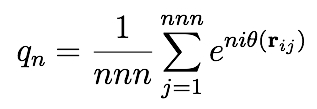

compute hexorder/atom command¶
Syntax¶
compute ID group-ID hexorder/atom keyword values ...
- ID, group-ID are documented in compute command
- hexorder/atom = style name of this compute command
- one or more keyword/value pairs may be appended
keyword = degree or nnn or cutoff cutoff value = distance cutoff nnn value = number of nearest neighbors degree value = degree n of order parameter
Examples¶
compute 1 all hexorder/atom
compute 1 all hexorder/atom degree 4 nnn 4 cutoff 1.2
Description¶
Define a computation that calculates qn the bond-orientational order parameter for each atom in a group. The hexatic (n = 6) order parameter was introduced by Nelson and Halperin as a way to detect hexagonal symmetry in two-dimensional systems. For each atom, qn is a complex number (stored as two real numbers) defined as follows:
where the sum is over the nnn nearest neighbors of the central atom. The angle theta is formed by the bond vector rij and the x axis. theta is calculated only using the x and y components, whereas the distance from the central atom is calculated using all three x, y, and z components of the bond vector. Neighbor atoms not in the group are included in the order parameter of atoms in the group.
The optional keyword cutoff defines the distance cutoff used when searching for neighbors. The default value, also the maximum allowable value, is the cutoff specified by the pair style.
The optional keyword nnn defines the number of nearest neighbors used to calculate qn. The default value is 6. If the value is NULL, then all neighbors up to the distance cutoff are used.
The optional keyword degree sets the degree n of the order parameter. The default value is 6. For a perfect hexagonal lattice with nnn = 6, q*6 = exp(6 i phi) for all atoms, where the constant 0 < phi < pi/3 depends only on the orientation of the lattice relative to the *x axis. In an isotropic liquid, local neighborhoods may still exhibit weak hexagonal symmetry, but because the orientational correlation decays quickly with distance, the value of phi will be different for different atoms, and so when *q*6 is averaged over all the atoms in the system, |<*q*6>| << 1.
The value of qn is set to zero for atoms not in the specified compute group, as well as for atoms that have less than nnn neighbors within the distance cutoff.
The neighbor list needed to compute this quantity is constructed each time the calculation is performed (i.e. each time a snapshot of atoms is dumped). Thus it can be inefficient to compute/dump this quantity too frequently.
Note
If you have a bonded system, then the settings of special_bonds command can remove pairwise interactions between atoms in the same bond, angle, or dihedral. This is the default setting for the special_bonds command, and means those pairwise interactions do not appear in the neighbor list. Because this fix uses the neighbor list, it also means those pairs will not be included in the order parameter. This difficulty can be circumvented by writing a dump file, and using the rerun command to compute the order parameter for snapshots in the dump file. The rerun script can use a special_bonds command that includes all pairs in the neighbor list.
Output info:
This compute calculates a per-atom array with 2 columns, giving the real and imaginary parts qn, a complex number restricted to the unit disk of the complex plane i.e. Re(qn)^2 + Im(qn)^2 <= 1 .
These values can be accessed by any command that uses per-atom values from a compute as input. See Section_howto 15 for an overview of LAMMPS output options.
Restrictions¶
none
Default¶
The option defaults are cutoff = pair style cutoff, nnn = 6, degree = 6
(Nelson) Nelson, Halperin, Phys Rev B, 19, 2457 (1979).